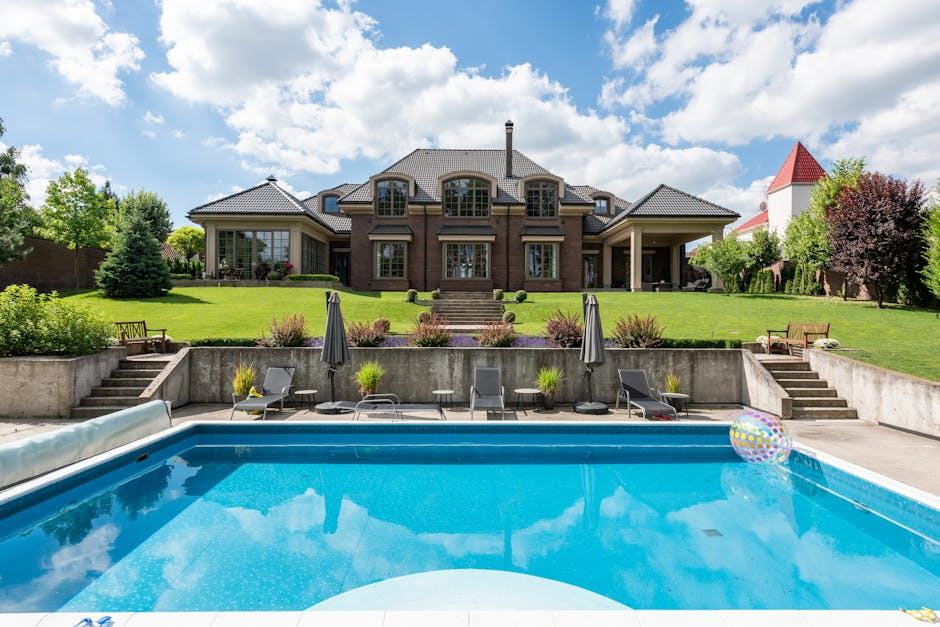
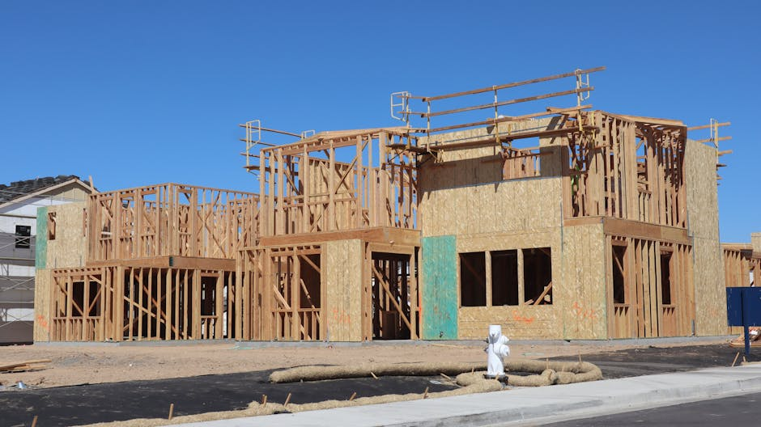

Quick answer: An architectural custom home builder in Sydney’s Eastern Suburbs works from architect-prepared drawings to realise a brief that a catalogue cannot accommodate — coastal sites, cliff-face blocks, heritage-listed properties, and lots too irregular for a standard floor plan. Construction costs run $4,500–$6,500/m² for quality mid-tier builds in 2026. The Eastern Suburbs spans three councils (Woollahra, Waverley, Randwick) with meaningfully different DA timelines. A realistic timeline from brief to handover is 22–36 months.
The Eastern Suburbs custom home brief arrives in one of two forms: “I want to maximise the harbour view,” or “I want to maximise the ocean view.” Both are entirely reasonable. Neither fully prepares you for what the coastal environment, the DA process, and the particular opinions of your council’s heritage officer will have to say about it.
“Architectural builder” is another phrase that needs unpacking before it becomes useful. It appears on roughly 80% of Eastern Suburbs builder websites, including some that have never opened a set of architect-prepared drawings without immediately suggesting how to simplify them. [Switches to straight face.] This guide covers what the phrase actually means in practice, what it costs, which council is sitting between you and your permit, and when an architectural custom builder is genuinely the wrong tool for your project.
- What “architectural” actually means in a builder
- The Eastern Suburbs: three councils, three building environments
- Coastal builds: what the environment demands
- Heritage overlays in the Eastern Suburbs
- Tight lots: where design intelligence matters more than size
- What architectural custom builds cost in 2026
- The realistic DA timeline
- When an architectural builder is the wrong choice
- Questions to ask before signing
- FAQ
What “Architectural” Actually Means in a Builder
The word “architectural” in a builder’s name or marketing typically signals one of two things. The first is genuine: the builder is structured and experienced to execute architect-prepared documentation without value-engineering the design intent away. The second is not: the builder employs in-house designers who produce something loosely resembling architectural drawings, and “architectural” is a positioning word rather than a capability claim.
The distinction matters in the Eastern Suburbs more than most places, because Eastern Suburbs sites are rarely straightforward. Cliff-face blocks in Dover Heights require engineering that a standard builder hasn’t costed. Harbour-facing sites in Darling Point involve structural complexity and material specifications that a catalogue builder’s subcontractor pool is not equipped for. Heritage-listed properties in Woollahra need a design that satisfies the heritage officer before a single brick moves.
A genuinely architectural builder does four things differently:
- Reads the drawings. Full architect-prepared documentation is the contract document. The builder builds what is drawn, specifies what is specified, and raises conflicts early — not after the slab is poured.
- Maintains the specification. Coastal environments require marine-grade materials. Heritage sites require approved finishes. An architectural builder does not substitute without written instruction.
- Manages consultants. An Eastern Suburbs custom home typically involves an architect, structural engineer, geotechnical engineer, heritage consultant, and coastal engineer on the same job. The builder coordinates all of them.
- Prices honestly. A builder who gives you a flat-rate per-m² quote on a cliff-face site without line items for structural complexity, marine-grade specification, and access scaffolding is not quoting your project — they are quoting someone else’s.
Ask any shortlisted builder to describe the last three projects they completed that were fully architect-designed. If they describe them by the style of house, they haven’t understood the question. If they describe the consultants involved, the structural challenges, and how they managed the documentation, that’s a different conversation.
The Eastern Suburbs: Three Councils, Three Different Building Environments
Photo by Ron Lach via Pexels
“Eastern Suburbs” covers a large slice of Sydney and three meaningfully different council jurisdictions. The council your site falls under determines your DA process, your heritage exposure, and a large share of your timeline.
Woollahra Council — Double Bay, Point Piper, Darling Point, Edgecliff, Bellevue Hill, Paddington, Rose Bay, Woollahra: Extensive heritage conservation areas. Among Sydney’s most complex residential DAs. Prestige harbour-facing sites in Point Piper and Darling Point involve development controls that require experienced town planning advice from the first meeting. Straightforward Woollahra DAs run 3–6 months; heritage-affected applications with neighbour notification run 9–18 months.
Waverley Council — Bondi Beach, Bondi, Bronte, Tamarama, Clovelly, Dover Heights, Waverley: High coastal exposure, significant topography in Dover Heights and the clifftop strips, SEPP coastal management considerations. Generally faster for standard residential DAs than Woollahra — budget 3–5 months for straightforward applications. Coastal erosion risk maps apply to some sites and affect what can be built and how close to the cliff edge.
Randwick City Council — Coogee, Maroubra, Kingsford, Kensington, Randwick, Malabar: The broadest geographic coverage and the most varied building environment. Generally more straightforward DA timelines than Woollahra for non-heritage sites. Some heritage conservation areas in Randwick and Kensington.
A builder who tells you they “build all over the Eastern Suburbs” without distinguishing between a Woollahra heritage DA and a Randwick new-build permit is either very experienced or not distinguishing for a reason. Ask which councils they have active permits with right now.
Coastal Builds: What the Environment Demands
Properties within approximately 1km of the coast are classified as marine environments under Australian Standards, and the specification requirements are not optional.
Marine environments cause accelerated corrosion. Structural steel must be hot-dip galvanised or stainless. Window frames, door hardware, balustrade fixings, roofing fasteners, and flashings must all be specified to resist salt-laden air. Standard residential-grade products fail faster than their warranties suggest in coastal environments — and the cost to replace corroded balustrade hardware on a three-storey Bronte build is considerably more than the cost of specifying it correctly the first time.
What this means for your project:
- Structural steel: Hot-dip galvanised minimum; stainless in high-exposure positions
- Window and door frames: Thermally broken aluminium, commercial-grade hardware, marine-rated fasteners
- Roofing: Metal roofing systems in coastal zones require specific substrate and coating specifications
- Landscaping: Salt-tolerant species and corrosion-resistant hardware throughout
Marine-grade specifications add approximately 8–15% to total construction cost compared to an equivalent inland build. A builder who quotes you the standard-spec rate on a Bondi or Bronte block without a marine-grade line item has either not costed it or is quoting a project they haven’t thought through.
Coastal hazard overlays also apply to some clifftop sites in Dover Heights and Coogee. These restrict how close to the cliff edge structures can be built, can require coastal engineering reports as part of the DA, and affect insurability. Confirm your site’s coastal hazard status via the relevant council’s online mapping tool before finalising your brief.
Heritage Overlays in the Eastern Suburbs
Heritage conservation areas are concentrated in the inner Eastern Suburbs — Paddington, parts of Woollahra and Darling Point — but individual heritage listings exist across all three Eastern Suburbs councils.
For any site subject to a heritage listing or within a conservation area, the DA requires a heritage impact statement prepared by an accredited heritage consultant, and a design that responds to the heritage character of the site or streetscape. In some cases this triggers referral to the NSW Heritage Office for comment.
Not all architects operating in the Eastern Suburbs hold heritage consultant accreditation. Heritage knowledge is also somewhat council-specific — an architect who has navigated Woollahra Council’s heritage officer successfully before will manage the process differently than one who hasn’t.
Check your property’s heritage status on the NSW State Heritage Register and your relevant council’s Local Environmental Plan heritage map before you brief anyone. Discovering a heritage listing after you’ve committed to a design direction is an expensive time to find out.
Tight Lots: Where Design Intelligence Matters More Than Size
Many Eastern Suburbs residential lots run 200–400m². In a market where land costs what it does, that is not unusual — it is the norm in Bondi, Bronte, Clovelly, Darling Point, and Paddington’s terrace streets.
On a tight lot, the architectural brief is fundamentally different from a suburban custom build. The question is not “how much space can we fit” — it is “how does this 200m² lot generate a home that lives bigger than it measures?” The answers involve:
- Section design. Split-levels, double-height voids, and rooftop terraces create perceived volume without increasing footprint. An architectural builder who has built these before prices them accurately — a builder who hasn’t will miss the structural complexity.
- Passive solar. On a narrow lot, orientation, window placement, and thermal mass are not luxury items — they are the difference between a liveable home and an expensive one that needs air-conditioning ten months a year.
- Outlook rather than views. Not every Eastern Suburbs lot has a harbour view. A well-resolved tight-lot design creates composed internal outlooks, borrowed light, and garden connection that add genuine amenity without relying on a view the block doesn’t have.
- Car access. Many inner Eastern Suburbs lots have rear lane access or tight street frontage. Basement garages and tandem parking arrangements require specific structural and hydraulic engineering. Confirm the access solution with the builder before the architect draws anything — access that works on paper can fail on site.
What Architectural Custom Builds Cost in 2026

Photo by Max Vakhtbovych via Pexels
Eastern Suburbs architectural custom builds sit at the premium end of Sydney’s residential construction market. These figures are for construction only.
| Tier | Construction cost per m² | What you get |
|---|---|---|
| Quality mid-tier | $4,500–$6,500 | Architect-coordinated, quality finishes, marine-grade specification where required |
| High-end architectural | $6,500–$9,500 | Full architectural intent realised, imported materials, bespoke joinery, complex structural features |
| Ultra-premium | $9,500–$14,000+ | Clifftop or waterfront builds, full structural engineering complexity, basement, home automation |
The construction figure excludes:
- Demolition ($18,000–$55,000 depending on site access and asbestos)
- Heritage consultant ($15,000–$40,000 if applicable)
- DA and CC fees, geotechnical and coastal engineering reports
- Architect, structural engineer, and surveyor
- Marine-grade specification premium (8–15% on coastal sites)
- Structural complexity premium on cliff-face or harbour-facing sites ($100,000–$400,000)
- Landscaping, pool, rooftop terrace, driveway
- Land (which, in Point Piper or Darling Point, requires no further comment)
On a typical 300–450m² Eastern Suburbs block, those additional costs add $400,000–$800,000 to the total. A well-specified architectural custom home in the Eastern Suburbs reaches $2.5M–$4.5M all-in before land. At the upper end of this market, that is not a ceiling — it is a starting point.
The Realistic DA Timeline

Photo by D Goug via Pexels
A full architectural custom build in the Eastern Suburbs — from brief to handover — typically runs 22–36 months.
| Phase | Typical duration |
|---|---|
| Design and brief development | 2–4 months |
| DA lodgement and determination (standard) | 4–8 months |
| DA lodgement and determination (heritage-affected) | 9–18 months |
| Construction Certificate | 1–2 months |
| Construction | 12–18 months |
| Defects period and handover | 1–2 months |
Woollahra Council is among Sydney’s slower DA processors for complex residential applications — a heritage-affected site with Neighbour Notification and multiple consultant reports will routinely run 12–18 months from lodgement to determination. Waverley and Randwick are meaningfully faster for standard DAs, but coastal hazard or heritage overlays reintroduce complexity.
A pre-DA meeting with the relevant council is worth scheduling before the architect finalises the design. Most Eastern Suburbs councils offer pre-lodgement meetings that flag objections early — when they are cheap to resolve — rather than after lodgement, when they are not.
Budget for the longer end of every range. A builder promising 18 months all-in on a heritage-affected or cliff-face site is either not accounting for DA risk or is not familiar with the relevant council. Neither is a good sign.
When an Architectural Builder Is the Wrong Choice
This section is the one most Eastern Suburbs builder websites skip. We are not most builder websites.
- Your budget is under $1.5M all-in for a new build. An architectural builder’s overhead, consultant coordination, and specification standards are priced into their structure. Below this threshold, a quality custom builder — not necessarily marketing themselves as “architectural” — will deliver better value.
- Your site is flat, simple, and carries no heritage or coastal complexity. A straightforward site with a standard brief doesn’t need architectural-level structural coordination. The premium you’d pay for it is the premium for complexity you don’t have.
- You have a hard move-in deadline under 18 months. Woollahra DA timelines alone make this unrealistic for most sites in that LGA. If your timeline is fixed, that is information about which council’s jurisdiction you should be building in — not a reason to rush the process.
- Your brief is essentially a catalogue home on a good lot. If the design is uncomplicated and the lot is forgiving, a semi-custom or volume builder will execute it faster, cheaper, and without the overhead of full architectural coordination. Paying for architectural expertise on a brief that doesn’t need it is a poor use of either party’s time.
Questions to Ask Before Signing
A builder who handles these well is showing you something. One who turns every answer into a credentials presentation is showing you something too.
- Which architect practices have you built with in the Eastern Suburbs, and can you show me a completed project where architect-prepared documentation was delivered without significant value-engineering?
- Which councils have you obtained DAs from in the last two years — and did any involve Heritage Overlay or coastal hazard considerations?
- Who manages my site day-to-day? Can I meet them before we sign?
- Have you built in a marine environment? What marine-grade specifications did you use, and who was your specialist subcontractor for coastal metalwork?
- What contract type do you use — HIA, MBA, or your own? How do you handle provisional sums, and what was the average variance on your last four projects?
- Can you give me contact details for three clients whose homes were completed in the last three years — including one coastal or cliff-face build?
Six questions. Appropriate for a $2M+ commitment. A builder who finds them inconvenient is also providing information.
FAQ
What is the difference between an architectural home builder and a regular custom builder?
An architectural home builder works from architect-prepared drawings and builds to full specification without redesigning the project to suit their subcontractors. A regular custom builder may produce the design themselves — often using in-house designers working from modified standard plans. In the Eastern Suburbs, where sites are complex and the brief is often specific about design intent, the ability to execute full architectural documentation is the meaningful difference. The two categories charge differently and deliver differently.
How much does a custom architectural home cost in Sydney’s Eastern Suburbs?
Construction costs run $4,500–$6,500/m² for quality mid-tier architectural builds and $6,500–$9,500+/m² for premium specification. A 300m² home at the mid-tier midpoint costs roughly $1.65M–$1.95M to build before a single consultant fee is added. With heritage consultant, DA, demolition, coastal engineering, landscaping, and pool, the all-in number for a well-specified Eastern Suburbs architectural home regularly sits between $2.5M and $4.5M — not including land.
Which councils cover the Eastern Suburbs and how do their DA timelines compare?
Woollahra Council (Double Bay, Bellevue Hill, Darling Point, Rose Bay), Waverley Council (Bondi, Bronte, Dover Heights, Clovelly), and Randwick City Council (Coogee, Maroubra, Kensington). Woollahra is consistently the most complex for heritage-affected sites — budget 9–18 months for those DAs. Waverley and Randwick run 3–6 months for standard residential applications without heritage overlay complications. Confirm which council covers your specific address before committing to a project timeline.
Do I need special materials for a coastal home in the Eastern Suburbs?
Yes. Marine-environment classification under Australian Standards applies to properties within approximately 1km of the coast. This requires marine-grade fixings, hot-dip galvanised or stainless structural steel, commercial-grade window frames, and corrosion-resistant roofing specifications. The premium is approximately 8–15% on total construction cost. A builder quoting standard-spec rates on a Bondi or Bronte block without a marine-grade line item is not quoting your project accurately.
Are there heritage overlays in Sydney’s Eastern Suburbs?
Yes. Significant heritage conservation areas exist across Woollahra, Darling Point, and parts of Randwick and Waverley. Individual heritage listings apply to many Victorian, Edwardian, and interwar properties. A heritage impact statement is required for any DA on a heritage-listed site or within a conservation area. Check your property’s status on the NSW State Heritage Register and your council’s LEP map before briefing an architect.
How long does a custom home build take in Sydney’s Eastern Suburbs?
A full architectural custom build runs 22–36 months from brief to handover: 2–4 months design, 4–18 months DA (depending on council and heritage overlay), 1–2 months Construction Certificate, and 12–18 months construction. Woollahra heritage DAs are consistently at the longer end. A builder promising 18 months all-in on a Woollahra heritage site either hasn’t costed the DA phase or hasn’t done many of them.